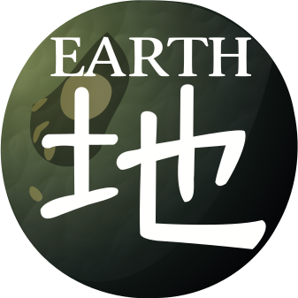

-
Darumaka & Darmanitan

Darumaka e Darmanitan são Pokémon conhecidos por sua ligação com o calor e sua incrível resistência. Darumaka, o estágio inicial, é pequeno, energético e mantém seu corpo quente. Ele possui uma natureza animada e um comportamento que reflete sua energia incansável. Quando evolui para Darmanitan, torna-se um Pokémon de grande força e intensidade. Seu corpo pode armazenar calor interno tão alto que queima com chamas intensas, as quais usa para desferir ataques devastadores. Além disso, possui uma forma Zen única, onde troca sua força bruta por calma e habilidades psíquicas, demonstrando um equilíbrio fascinante entre energia e serenidade.
ATK/ 3200 DEF/ 2100 -3200-0
-3200-0
-
Chatot

Chatot é um Pokémon peculiar conhecido por sua habilidade de imitar sons e vozes humanas com precisão impressionante. Sua cabeça, que lembra uma nota musical, reforça sua afinidade natural com o som. Ele utiliza essa habilidade para se comunicar, confundir adversários e até para se camuflar em ambientes barulhentos. Extremamente inteligente, Chatot é capaz de aprender padrões de fala complexos e reproduzi-los com perfeição. Seu canto não é apenas um meio de expressão, mas também uma poderosa ferramenta estratégica em batalha, combinando criatividade e astúcia.
ATK/ 1900 DEF/ 800
 -1900-0
-1900-0
-
Jirachi


Jirachi é um Pokémon mítico conhecido como o "Pokémon dos Desejos". Diz-se que ele acorda de seu sono de mil anos quando uma pessoa canta uma melodia pura próxima a ele. Durante o curto período em que está desperto, Jirachi é capaz de conceder qualquer desejo escrito em notas que ficam presas em sua cabeça. Sua existência é envolta em mistério, sendo visto como um símbolo de esperança e milagres. Apesar de sua aparência delicada, Jirachi possui grande olho em sua barriga, que permanece fechado enquanto dorme. Quando aberto, esse olho libera um poder psíquico incrível, permitindo que Jirachi manipule energia de forma inimaginável, tanto para proteção quanto para realizar feitos extraordinários. Sua existência é envolta em mistério, sendo visto como um símbolo de esperança, milagres e força oculta.
ATK/ 4000 DEF/ 4000
-4000-0
-
Gyarados


Gyarados é um Pokémon feroz e temido por sua natureza destrutiva. A evolução de Magikarp transforma sua frustração em um poder avassalador, resultando em um Pokémon capaz de devastar cidades inteiras em sua fúria. Embora difícil de controlar, Gyarados é incrivelmente leal a um treinador que consiga ganhar sua confiança. Seu corpo imenso e sua força descomunal fazem dele um adversário formidável em batalha, e sua reputação de terror dos mares o precede por gerações.
ATK/ 2900 DEF/ 2000
-2900-0
-
Tropius

Tropius é um Pokémon gentil que vive em florestas tropicais, sendo conhecido por sua ligação com a natureza. As folhas largas que crescem em suas costas permitem que ele voe lentamente pelos céus, enquanto os frutos que crescem em seu pescoço são doces e nutritivos, servindo como alimento para outros Pokémon e até humanos. Tropius é um símbolo de harmonia com o ambiente, movendo-se serenamente entre a terra e o céu enquanto espalha sementes por onde passa.
ATK/ 700 DEF/ 2300
 -700-0
-700-0
-
Golurk


Golurk é um Pokémon antigo construído por uma civilização perdida para proteger e servir. Apesar de sua aparência robótica e imponente, ele carrega um propósito nobre: proteger aqueles ao seu redor. Seu corpo é mantido unido por energia mística, e se o selo em seu peito for quebrado, ele libera uma força incontrolável. Golurk também é conhecido por sua habilidade de voar como um foguete, apesar de seu tamanho gigantesco, cruzando céus como um guardião silencioso.
ATK/ 2500 DEF/ 1800
 -2500-0
-2500-0
-
Manaphy & Kyogre

Manaphy e Kyogre são Pokémon místicos associados à água e ao equilíbrio dos ecossistemas. Manaphy, conhecido como o Príncipe do Mar, é profundamente conectado à pureza e à harmonia dos oceanos. Ele possui a habilidade de criar laços com qualquer ser vivo, simbolizando sua natureza pacífica e protetora. Além disso, pode viajar grandes distâncias, sempre em sintonia com as correntes marítimas. Por outro lado, Kyogre, o lendário governante dos mares, é uma força imponente da natureza, capaz de expandir os oceanos com seu poder. Suas chuvas torrenciais são vistas como um fenômeno que molda o equilíbrio do mundo. Apesar de seu imenso poder, Kyogre também simboliza o respeito pela grandiosidade e fragilidade dos mares. Ambos, em suas formas singulares, representam a essência da vida e o equilíbrio das águas, sendo guardiões inigualáveis dos oceanos.
ATK/ 8300 DEF/ 7300

 -8300-0
-8300-0 -
Lugia

Lugia é um Pokémon lendário conhecido como o guardião dos mares. Sua presença está envolta em mistério, pois raramente é visto, preferindo viver nas profundezas do oceano para evitar perturbações no equilíbrio do mundo. Suas asas possuem um poder imenso, sendo capazes de criar tempestades devastadoras com um simples bater. Para evitar causar destruição acidental, Lugia escolhe permanecer oculto, emergindo apenas em momentos de grande necessidade. Diz-se que sua serenidade e sabedoria o tornam um verdadeiro protetor dos oceanos e dos céus.
ATK/ 3800 DEF/ 5000
 -3800-0
-3800-0 -
Swadloon 

Swadloon é um Pokémon quieto e reservado que passa a maior parte do tempo enrolado em uma camada de folhas para se proteger do frio e da chuva. Ele habita florestas densas, onde se alimenta de folhas caídas e contribui para a fertilidade do solo. Embora tenha uma aparência melancólica, Swadloon é um estágio essencial de crescimento antes de sua transformação final. Sua conexão com a natureza é profunda, e onde quer que ele passe, deixa um ambiente mais saudável e vibrante.
ATK/ 300 DEF/ 500
 -300-0
-300-0 -
Hatterene
.jpg)
Hatterene é um Pokémon enigmático e solitário, conhecido por sua aversão a barulhos altos e ambientes agitados. Ele prefere viver em locais tranquilos e isolados, atacando ferozmente qualquer um que perturbe sua paz. Seus longos tentáculos rosados não são apenas parte de sua aparência mística, mas também funcionam como extensões de seu poder psíquico, permitindo que ele controle a energia mental e ataque à distância. Diz-se que Hatterene pode sentir as emoções das pessoas e Pokémon ao seu redor, e aqueles que emanam sentimentos negativos correm o risco de serem perseguidos por sua fúria silenciosa.
ATK/ 2700 DEF/ 2100
-2700-0 -
Eelektross


Eelektross é um Pokémon aterrorizante que habita águas profundas, atacando suas presas com tentáculos poderosos antes de arrastá-las para o fundo do mar. Ele pode sair da água e se mover em terra firme usando seus membros ágeis, tornando-se um caçador versátil. Seu corpo gera eletricidade intensa, que ele descarrega em seus oponentes para paralisá-los antes de finalizar o ataque. Um dos aspectos mais notáveis de Eelektross é sua total ausência de fraquezas, graças à sua habilidade Levitate, que o torna imune a ataques do tipo Terra, o único que normalmente seria super eficaz contra Pokémons de seu tipo. Isso o torna um adversário incrivelmente resistente e difícil de derrubar, consolidando sua reputação como um predador formidável.
ATK/ 1800 DEF/ 2800
 -1800-0
-1800-0 -
Shaymin-Sky

Shaymin, em sua Forma Sky, se transforma de uma criatura tímida e terrestre em um ágil e destemido viajante dos céus. Seu corpo se torna mais esguio, suas patas traseiras se alongam e ele ganha um par de elegantes pétalas vermelhas próximas à sua cabeça, refletindo sua nova energia vibrante. Diferente de sua Forma Land, onde é reservado e discreto, Shaymin Sky exibe uma personalidade ousada e extrovertida, voando livremente pelos céus em alta velocidade. Essa forma desperta seu verdadeiro potencial em batalha, tornando-o mais rápido e ofensivo. Diz-se que Shaymin Sky espalha ar puro e vitalidade por onde passa, deixando um rastro de energia revigorante na natureza. No entanto, essa forma só pode ser mantida durante o dia e em condições climáticas adequadas, retornando à sua Forma Land ao anoitecer ou quando exposto ao frio intenso
ATK/ 4600 DEF/ 3400
 -4600-0
-4600-0
-
Magikarp

Magikarp é um dos Pokémon mais fracos e inofensivos do mundo, frequentemente considerado inútil devido à sua incapacidade de aprender ataques eficazes. Seu corpo é frágil, e sua principal habilidade, Splash, é amplamente vista como um movimento sem impacto real nas batalhas. Magikarp simplesmente pula no ar, sem causar dano, o que faz com que muitos considerem sua presença na equipe praticamente irrelevante. Apesar disso, Magikarp tem um valor simbólico importante, sendo um exemplo da perseverança e do potencial oculto. Sua aparente inutilidade é rapidamente superada quando ele evolui para Gyarados, transformando-se em um dos Pokémon mais poderosos e temidos. Essa evolução radical serve como uma lembrança de que até o Pokémon mais fraco pode se tornar uma força imbatível, desde que tenha a chance de crescer e se transformar.
ATK/ 0 DEF/ 300
-0-0
-
Onix

Onix é um imenso Pokémon serpentino feito de rochas maciças, medindo incríveis 8,8 metros de comprimento, o que o torna um dos maiores Pokémon não lendários. Seu corpo resistente se fortalece com o tempo, à medida que as pedras que o compõem se comprimem, tornando-o cada vez mais duro e durável. Onix pode viajar rapidamente pelo subsolo, cavando túneis extensos e causando tremores em seu caminho. Seu senso de orientação é altamente desenvolvido, permitindo que ele se mova pelas profundezas da terra sem nunca se perder.
ATK/ 1500 DEF/ 3000
 -1500-0
-1500-0
-
Heatran

Heatran é um Pokémon lendário que habita o interior de vulcões, onde caminha sobre magma incandescente sem sofrer danos. Seu corpo metálico é resistente e coberto por marcas alaranjadas que brilham como lava derretida. Possui cascos cruzados em seus pés que permitem que ele se fixe em superfícies verticais, escalando paredes e tetos com facilidade. Heatran é dito ser uma manifestação viva da energia vulcânica, e seu temperamento selvagem o torna um adversário temível. Sua força é destrutiva, e sua ligação com a origem dos continentes o coloca entre os Pokémon mais poderosos do tipo Fogo.
ATK/ 3800 DEF/ 4200
 -3800-0
-3800-0 -
Abomasnow
Abomasnow é um Pokémon massivo que vive em montanhas geladas, sendo conhecido como o "Monstro da Neve". Ele pode criar intensas nevascas ao seu redor, cobrindo vastas áreas com neve espessa para proteger seu território. Seu corpo é coberto por uma espessa camada de gelo e folhas congeladas, tornando-o perfeitamente adaptado ao frio extremo. Apesar de sua aparência intimidadora, Abomasnow é protetor com aqueles que considera aliados. No entanto, sua mera presença pode ser um sinal de perigo iminente, pois onde ele caminha, o inverno rigoroso sempre o acompanha.
ATK/ 3100 DEF/ 1700
 -3100-0
-3100-0 -
Snorlax

Snorlax é um Pokémon gigantesco e preguiçoso, passando a maior parte do tempo dormindo profundamente. Sua fome insaciável o leva a consumir quantidades enormes de comida, podendo devorar mais de 400 kg de alimento por dia antes de cair em um sono profundo. Mesmo quando dorme, seu corpo é tão robusto que quase nada consegue acordá-lo. Treinadores que desejam movê-lo do caminho muitas vezes precisam esperar que ele desperte por conta própria. Apesar de sua extrema preguiça, quando se levanta para lutar, Snorlax revela uma força impressionante, sendo capaz de esmagar inimigos com seu peso colossal.
ATK/ 3000 DEF/ 3000
 -3000-0
-3000-0 -
Charmander & Charizard

Charmander é um Pokémon pequeno, mas determinado, com uma chama na ponta da cauda que reflete seu estado emocional e vitalidade. Desde o nascimento, essa chama nunca se apaga, e seu brilho intenso indica sua boa saúde e vigor. Quando evolui para Charizard, sua aparência e poder aumentam drasticamente, tornando-se um dragão alado capaz de cuspir chamas que derretem rochas. Charizards são conhecidos por sua lealdade e instinto protetor, especialmente em relação a Charmanders mais jovens. Diz-se que, em tempos de perigo, um Charizard adulto cuidará de um Charmander frágil, protegendo sua chama e garantindo sua sobrevivência. Essa forte ligação demonstra que, apesar de sua aparência feroz, Charizard é um Pokémon com um grande senso de responsabilidade e honra.
ATK/ 3700 DEF/ 3200
 -3700-0
-3700-0
-
Rhyperior
.jpg)
Rhyperior é um Pokémon de porte colossal e extremamente resistente, possuindo uma carapaça de pedra reforçada que o torna quase impenetrável. Ele pode disparar pedras e até mesmo Geodudes de seus braços ocos com uma força destrutiva, usando-os como projéteis em combate. Sua pele rochosa o protege de impactos devastadores, permitindo que ele atravesse terrenos hostis sem sofrer danos. Apesar de sua aparência bruta, Rhyperior é altamente adaptável e sobrevive em ambientes extremos. Sua força titânica o torna um dos Pokémon mais poderosos do tipo Terra, capaz de derrubar inimigos com pura brutalidade.
ATK/ 3300 DEF/ 2000
 -3300-0
-3300-0